Cave Engine 1.3 – Highlights
If you curious, since the last version (1.2 that was out in March, 2025), we had 173 commits, 378 files changed, 144.765 insertions(+), 3.856 deletions(-).
Ambient Occlusion
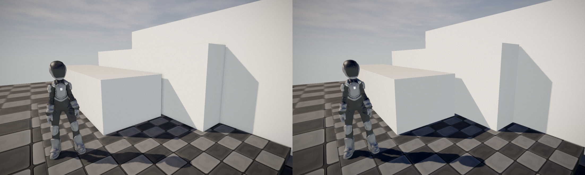
Ambient Occlusion: New built-in HBAO+ system for higher quality AO.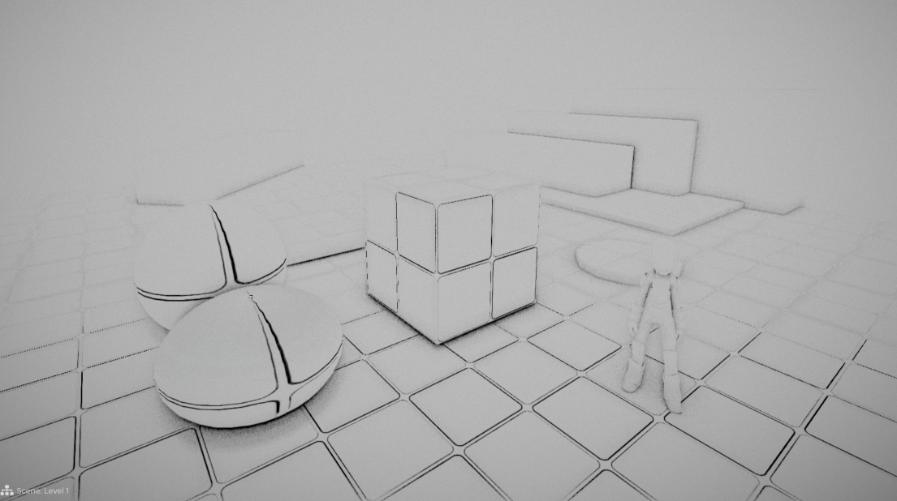
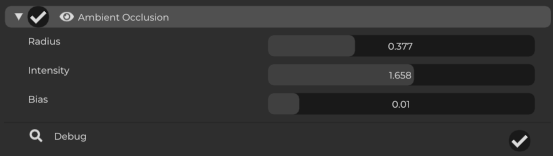
Procedural Textures
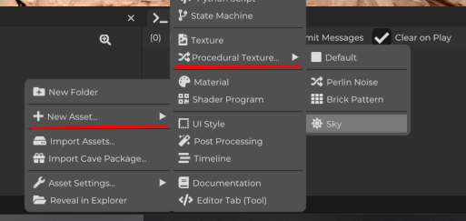
Procedural Sky: Brand-new default procedural sky shader.
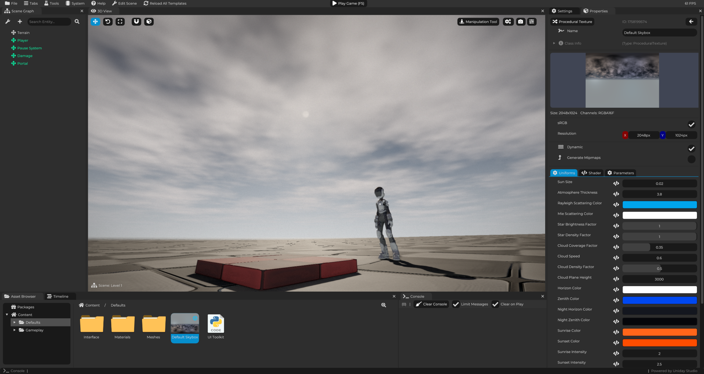
Procedural Textures: Added procedural texture system.
Project Templates
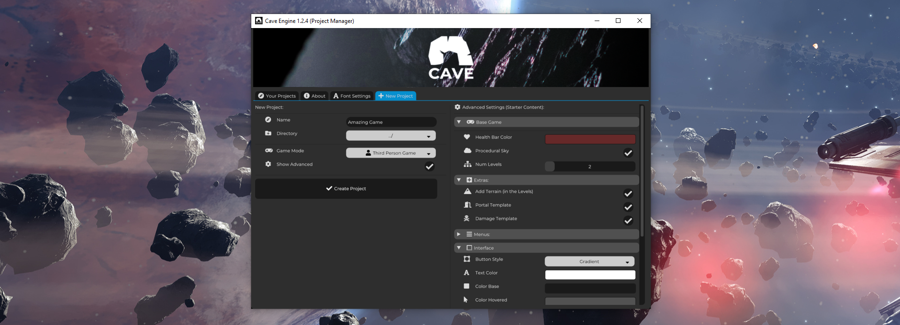
New Project Template: Improved default settings and assets when creating a new project.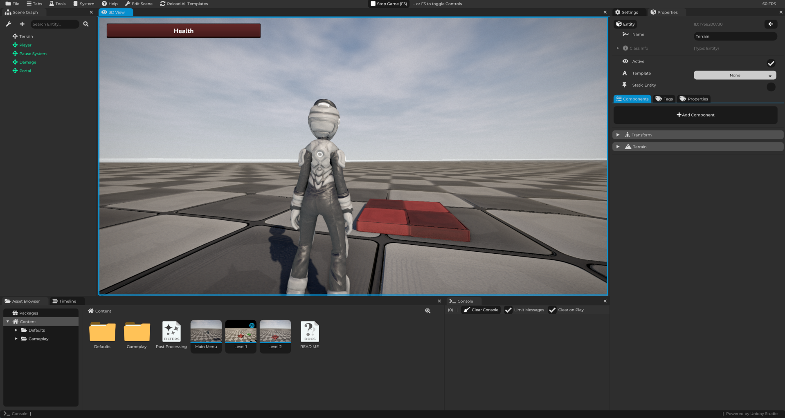
Cave is much better on Linux
Now it no longer depends or requires installing a bunch of dependencies. I've also implemented the Progress Bar popup (that was missing for Linux). Now the Linux X Windows feature parity should be pretty much 1:1.
Learn Cave is now Easier
- Tutorial Popups: Interactive tutorials for editor tabs (with screen grey-out).
New Code Editor (built in)
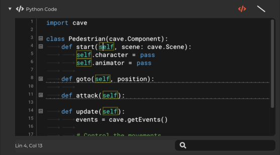
State Machine System (Experimental)
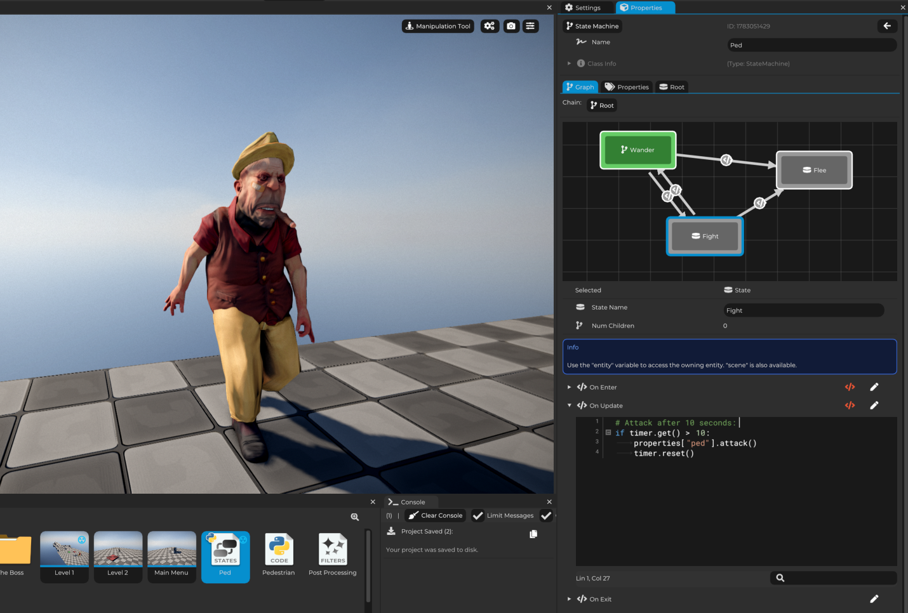
State Machines: Major improvements, fixes, debug tools, and icons.
Geometry Paint Tool
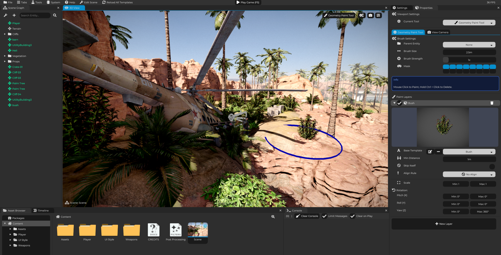
Geometry Paint tool.Talking about viewport Tools, we now have shortcuts to quickly swap tools.
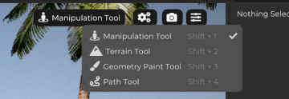
Path Component and System (Experimental)
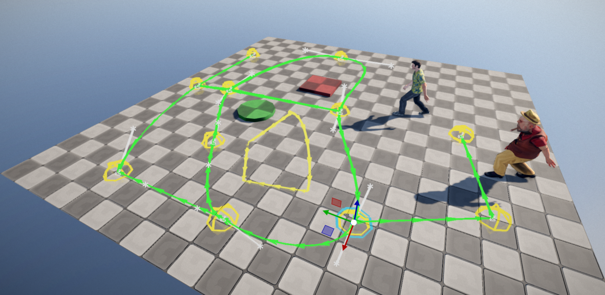
Terrain System Improvements:
- New paint color mode.
- Better creation UX and initial settings.
-
New Random::Terrain(...) function for procedural terrain.
-
UI System:
- New UI elements:
HeaderCheckbox, improved dropdowns, file/folder path pickers. -
Better 9-Slice editor, new defaults, and scale adjustments.
-
Python API:
- New
cave.getFilesAt(path) - New
cave.math.distance(...) - New Scene::GetDataOver... methods
- PythonCmp: option to set component through code.
Rendering Improvements
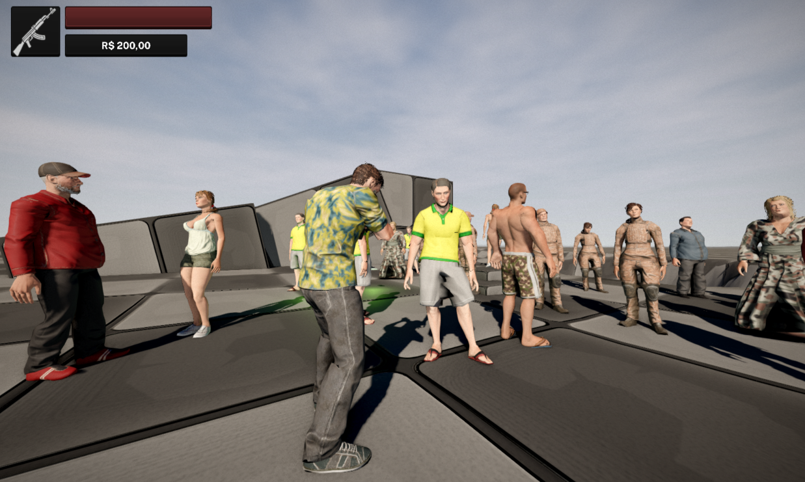
- New shadow culling techniques for cascaded shadow maps.
- Exposed FXAA parameters.
- Added MSAA (experimental, off by default).
- Eye Adaptation moved to GPU.
✅ Error Handling:
- Better crash reporting.
- Now there is a button to Copy the Console messages to Clipboard.
- Improved error messages and warnings (ex. terrain, physics, shaders).
🆕 What’s New for Users
- Built-in HBAO+ AO.
- New Procedural Sky and improved sky visuals.
- Procedural Textures system.
- Tutorial Popups in editor tabs.
- New default project setup.
- Terrain paint color mode, creation UX improvements.
- Improved state machines with debug view.
- Animation retargeting for meshes (early stage).
- UI upgrades: checkboxes, dropdowns, better styles.
- Python API extensions for files, math, scene data.
- Viewport Geometry Paint Tool.
- Shadow rendering optimizations.
- MSAA + FXAA improvements.
- More stable Eye Adaptation.
- Better crash/error reporting.
⚙️ New Render Hardware Interface (RHI) abstraction layer.
- Initial DirectX 12 backend groundwork (disabled for now).
⚙️ Cave for Web Update: Building!
⚙️ Animation Retargeting (Very Experimental):
First implementation of armature retargeting (WIP).
⚙️ Internal / Under the Hood
- New CheckInstallPath() function (detects OneDrive/Dropbox/special char issues).
- New Render Hardware Interface (RHI) abstraction layer.
- Initial DirectX 12 backend groundwork (disabled for now).
- Early work on Bindless Textures (disabled for now).
- Web (Emscripten) build progress.
- Linux build and static linking improvements.
- Refactored post-processing and renderer internals.
- New path utilities, regex helpers, and ID hashing.
- Improved DPI and font scaling handling.
- OGL state caching, instancing updates, new RenderGraph defaults.
- Improved OpenGL support across varying PC hardware.
- Many bug fixes: crashes, wrong warnings, physics collisions, terrain issues, undo/redo, etc.
🔴 Fixed Bugs
- Fix: Material Alpha Blend was missing
- Fix: Viewport Undo Crash
- Fix: Terrain Tool Crash
- Fix: Terrain still showing after removing Heightmap
- Fix: Crash dropping Mat to Terrain (Viewport)
- Fix: Terrain not being added with Transform
- Fix: Game UI: Font Spacing was wrong
- Fix: UIElement not updating on Font Change (UI)
- Fix: Cascade shadows not Loading on Runtime
- Fix: Timeline failing to add new Keyframes
- Fix: Shader Uniforms not appearing on Linux
- Fix: Linux: Exporting was missing Draco
- Fix: Linux: Python Error (missing pathes)
- Fix: Alpha Clip
- Fix: Allow unlimited HDR Exposure
- Fix: Deprecated GLSL function was being called (texture2D), making it not work on some GPUs
- Fix: Eye Adaptation too high on slow fps
- Fix: UIStyle UI + new default Values. Now the preview, in the Editor UI, of the nince slice cut actually makes sense and is properly calculated.
- Fix: ImageTexture crash while saving texture: If the image was null, it would crash.
- Fix: [Internal] IAssetHandler::Load(...) undefined behavior: Sometimes it would fail to load correctly if it had an asset attached to it and no asset after loading it. It will keep the previous asset.
- Fix: The Exposure was too high on first Frame
- Fix: Minor PhysicsConstraintComponent fixes
- Fix: Editor's UI Header Checkbox was problematic
- Fix: Removed "Visible" flag from the MeshComponent's UI. This is an internal/local only variable that doesn't get serialized and it was causing confusion among the users. You can still access it through Python
- Fix: Wrong Editor's UI Props and Dropdown width
- Fix: Renderer Camera Crash
- Fix: MeshComponent wrong warning on opaque materials (the warning was misleading)
- Fix: Physics Collision Checks were a bit off